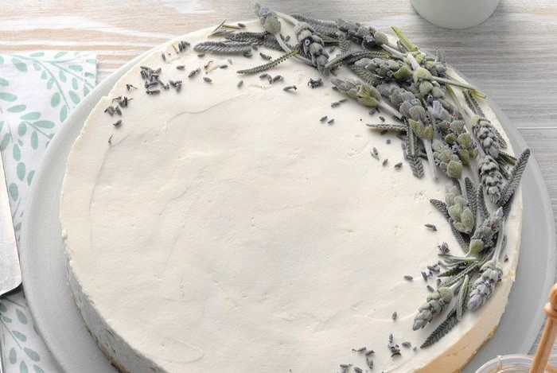

Total Time:
25 min.+ chilling
Servings:
16
Ingredients
4 tablespoons dried lavender flowers, divided
1/4 cup boiling water
1-1/2 cups crushed shortbread cookies (about 21 cookies)
3 tablespoons butter, melted
2 packages (8 ounces each) cream cheese, softened
3/4 cup honey
1-1/4 cups heavy whipping cream
Lavender sugar and fresh mint leaves, optional
Directions
- In a small bowl, combine 3 tablespoons lavender and water. Cover and steep for 15 minutes. Strain water, discarding lavender. Set aside.
- Crush remaining lavender flowers. In a small bowl, combine the cookie crumbs, butter and crushed lavender. Press onto the bottom of a greased 9-in. springform pan. Cover and refrigerate for at least 30 minutes.
- For filling, in a large bowl, beat cream cheese and honey until smooth. Gradually beat in lavender water. In another bowl, beat cream until stiff peaks form. Fold into filling. Spoon over crust.
- Refrigerate overnight. Run a knife around edge of pan to loosen; remove sides of pan. If desired, sprinkle with lavender sugar and mint leaves.